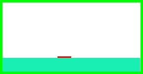
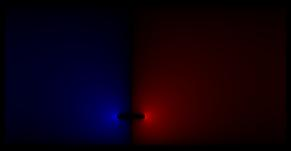
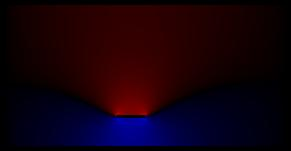
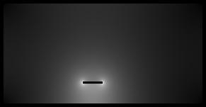
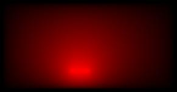

atlc reads a bitmap file, such as pcb.bmp After running atlc
% atlc pcb.bmp
you will have the following files.
|  |  | |
| pcb.bmp Original microstrip enclosed in a box. Note the thin red inner conductor, the green outer conductor, the white vaccum and the terquoise dielectric (Er=4.8). | pcb.Er.bmp Permittivity diagramme. This shows the permittivity as a grayscale - lighter for increasing permittivity. The conductors are shown red, green and blue, +1 V is shown red, 0V green and -1V blue. | pcb.Ex.bmp x-directed electric field. Blue is negative, Red is positive. Recall Ex=-dV/dx. |
|  |  |  |
| pcb.Ey.bmp y-directed electric field. Blue is negative, Red is positive. Recall Ey=-dV/dy. | pcb.E.bmp Magnitude of the electric field. E=Ex2+Ey2. Shown lighter for increasing E-field. | pcb.V.bmp Voltage field. Red is shown positive, black as no voltage and nagataive voltages would be shown as blue. |
pcb.bmp Er= MIXED C= 94.2540 pF/m L= 387.2186 nH/m Zo= 64.0956 Ohms v= 1.65528e+
08 m/sv_f= 0.5521 VERSION=3.0.1 |
01010010 |
|
| pcb.U.bmp Energy. Since E=0.5 C V2, this is proportinal to capacitance (and hence Er) and the E-field on a pixel | pcb.txt Text file with all the results from the simulation on one line. | pcb.Er.bin, pcb.Ex.bin, pcb.Ey.bin, pb.E.bin, pcb.V.bin and pcbU.bin Six binary files have the same data as the bitmaps, but in a quantitative manner. |
The bitmap files do not show quantitative data - ie the numbers are optimised to look okay, rather than to be scientifically rigorous.
The binary files show similar data to the bitmaps, but in a more scientific way. They show the electric field in volts/pixel (.Ex.bmp, .Ey.bmp and .E.bmp) and voltage (.V.bmp) assuming one conductor is earthed to 0v (the green one) and the other is at +1V (the red one). If your two conductors have a real voltage difference of V between them, the data file shows a value of E_data V/m, the dimensions of your transmission line are X mm across and the number of pixels in the x-direction allocated for the transmission line is N, then the true field strength that will be achieved in practice is E_real=E_data * N / X (V/mm)
atlc is written and supported by Dr. David Kirkby (G8WRB) It it issued under the GNU General Public License